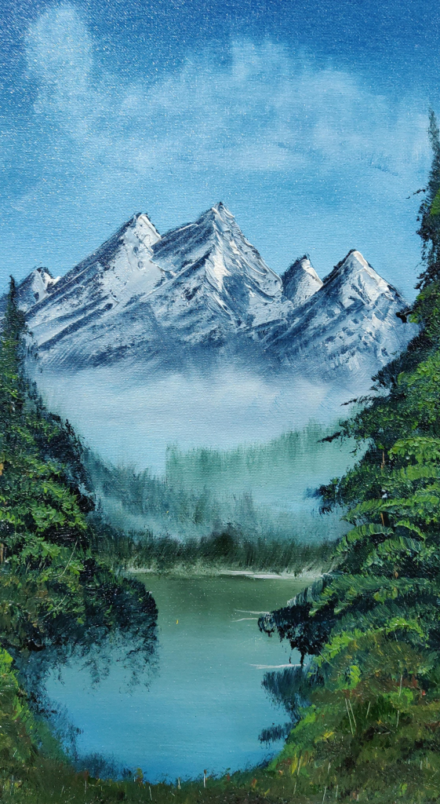
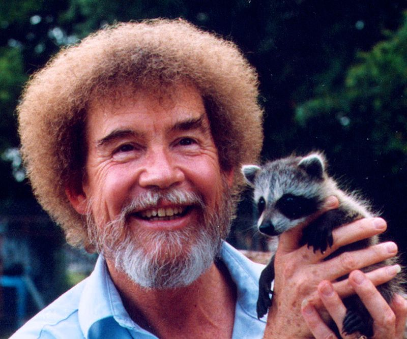
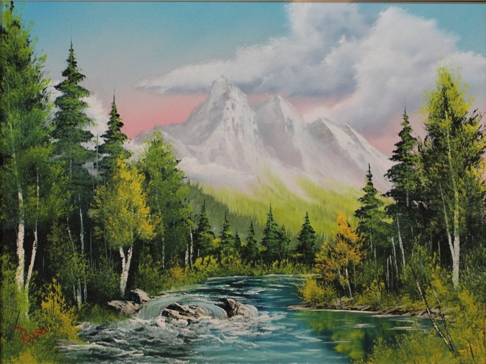
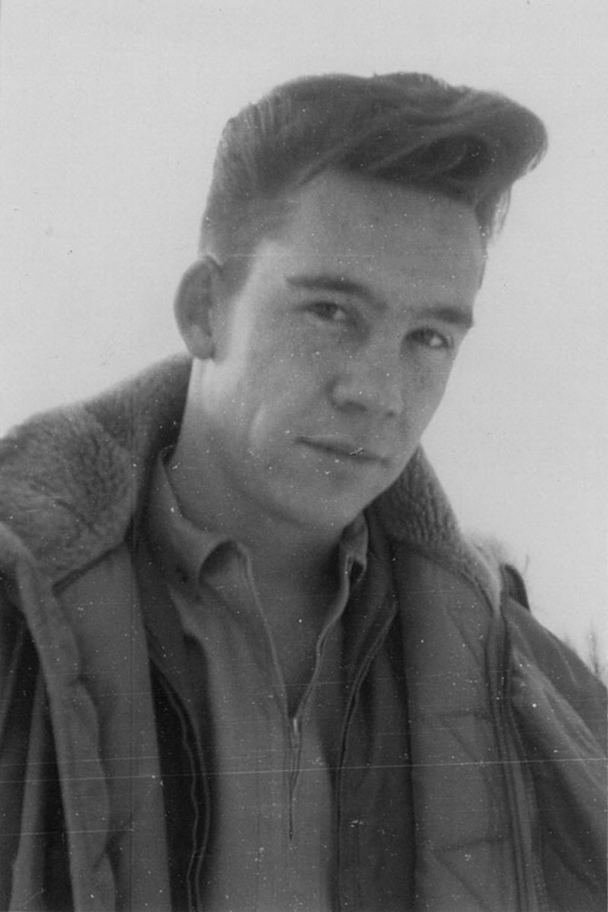
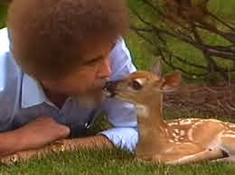
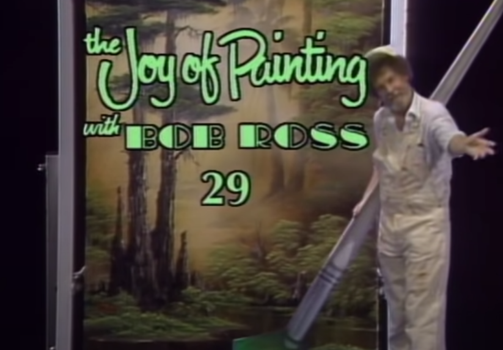
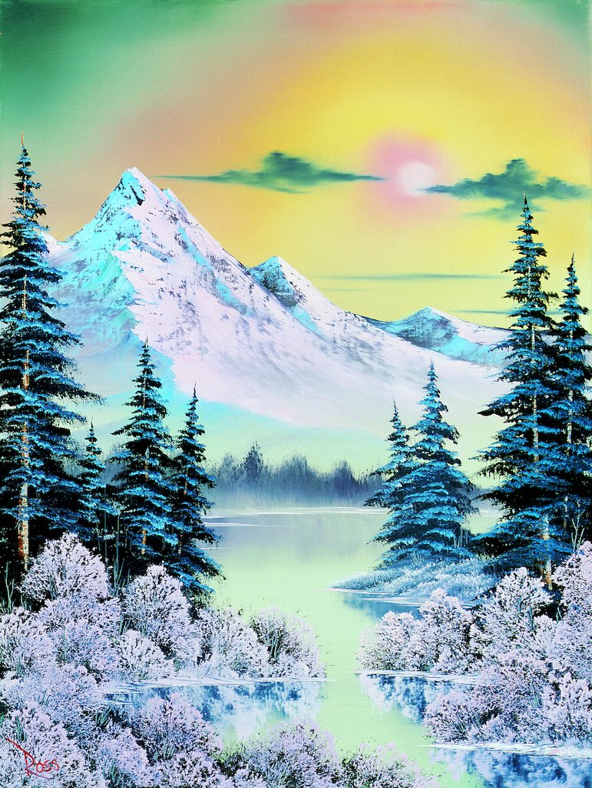
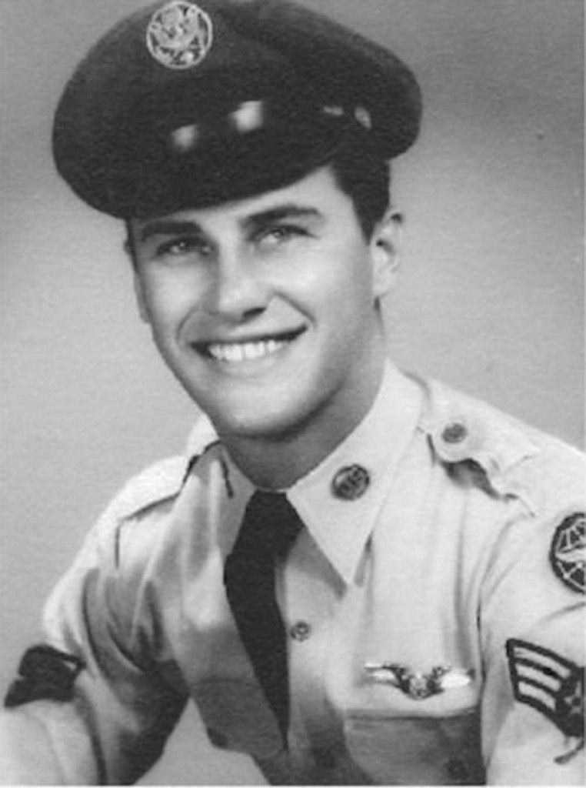
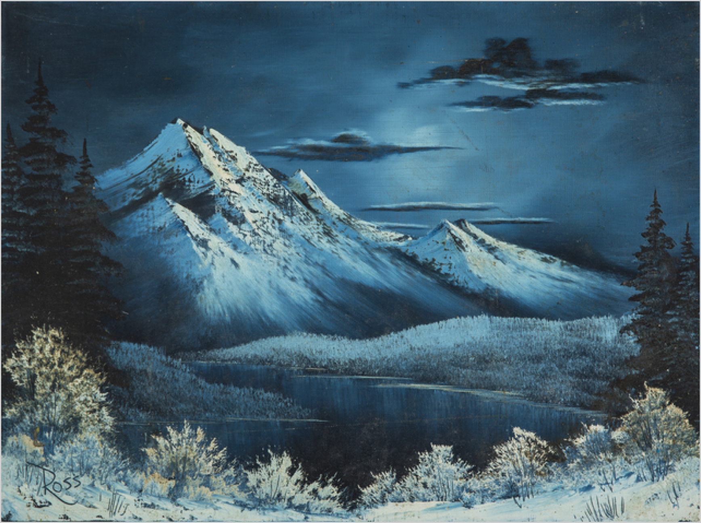
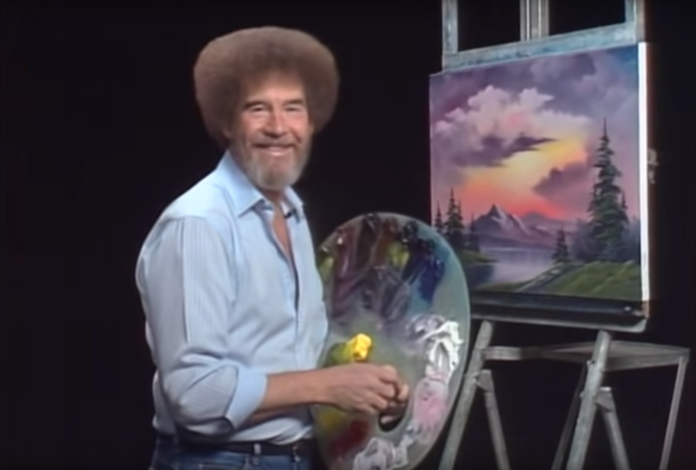

<!DOCTYPE html>
<html>
    <head>
        <title>Meet Bob Ross!</title>
        <link rel="stylesheet" type="text/css" href="assets/css/style.css" />
        <link rel="preconnect" href="https://fonts.gstatic.com">
<link href="https://fonts.googleapis.com/css2?family=Ovo&family=Rock+Salt&display=swap" rel="stylesheet">
    </head>
</html>
<body>
    <div id="first-page" >
        <div id="circle-1" class="circle"></div>
        <div id="quote">“We don’t make mistakes,
            just happy little accidents.”</div>
        <div id="circle-2" class="circle"></div> 
        <div id="circle-3" class="circle"></div> 
    </div>
    <div id="whole-page">
        <div id="left-side">
            <div id="background">
                
            </div>
            <div id="name">Bob Ross</div>
            <div id="picture1">
                
            </div>
            <div id="biography">Robert Norman Ross (October 29, 1942 – July 4, 1995) was an American painter, art instructor and television host. He was the creator and host of The Joy of Painting, an instructional television program that aired from 1983 to 1994. He has a well known internet presence due to his genuine, kind personality and for one of the most amazing afros to ever be witnessed. Most of his paintings were landscapes, where he typically depicted mountains, lakes, snow, and his classic happy trees. His episodes are available to watch over the internet and he would encourage you to join him!</div>
        </div>
        <div id="right-side">
            <div id="row1">
                    
                    
                    
            </div>
            <div id="row2">
                
                
                
            </div>
            <div id="row3">
                
                
            </div>
        </div>

        <div id="popup-background" class="hidden"></div>


        <div class="popup hidden" id="box1">
            
            <div class="caption">
                Bob Ross used an oil painting technique that he called "wet on wet." This technique allowed for continuos painting without having to wait for paint to dry.
            </div>
        </div>
        <div class="popup hidden" id="box2">
            
            <div class="caption">
                In this picture you can see that young Bob Ross looked a lot like Rick Astley.
            </div>
        </div>
        <div class="popup hidden" id="box3">
            
            <div class="caption">
                He really loved to spend time with animals and would routinely take care of wounded wild animals. He would often show animals on his show, such as raccoons, birds, and squirrels.
            </div>
        </div>
        <div class="popup hidden" id="box4">
            
            <div class="caption">
                The Joy of Painting went on for 31 seasons and 403 total episodes!
            </div>
        </div>
        <div class="popup hidden" id="box5">
            
            <div class="caption">
                One of his most famous phrases and painted form was his "happy trees."
            </div>
        </div>
        <div class="popup hidden" id="box6">
            
            <div class="caption">
                He use to be a drill sergeant while in the military, where he served in the Air Force. He said that after yelling so much, he never wanted to yell at anyone again.
            </div>
        </div>
        <div class="popup hidden" id="box7">
            
            <div class="caption">
                Most of Bob Ross' work can't be purchased because he never sold any. Instead he opted to donate most of his artworks to PBS stations to help with fundraisers and donor drives.
            </div>
        </div>
        <div class="popup hidden" id="box8">
            
            <div class="caption">
                He would only get perms for his hair in order to cut down on costs as his company started up, until eventually it became an important part to his companies image so he never changed it.
            </div>
        </div>
        <script src="assets/js/script.js"></script>
    </div>
</body>